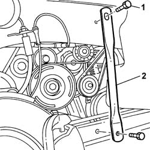
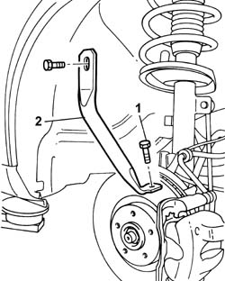

4410D16 BRACKET (ONE) RETAINING CHASSIS TO BODY - R R
- Path
- Procedures > 44 SUSPENSION AND WHEELS > 4410 FRONT SUSPENSION > 4410D FRAME AND CROSSMEMBER > 4410D16 BRACKET (ONE) RETAINING CHASSIS TO BODY - R R
- Kind
- repair procedure (removal / refitting; the operation number is the code)
- Applies to
- all engines; all production periods
- Interactive page
- https://sloeber94.github.io/elrnDB-fUlss/en/#/179007381
Applies to: all engines; all production periods
 Removing
Removing
 Refitting
Refitting- To remove the bracket fastening the suspension frame to the bodyshell, right front side, proceed as described below.
- Position the vehicle on a lift.
Op. 4450B04 RIGHT FRONT WHEEL R R
Op. 7055B91 RIGHT FRONT WHEEL ARCH LINER - R.R.
1. Undo the retaining bolts.
2. Remove the bracket fastening the suspension frame to the bodyshell.

Applies to: all engines; all production periods
- Proceed in the same way to remove the bracket fastening the suspension frame to the bodyshell, left front side.
- To remove the bracket fastening the suspension frame to the bodyshell, right rear side, proceed as described below.
- Position the vehicle on a lift.
Op. 4450B04 RIGHT FRONT WHEEL R R
1. Undo the retaining bolts.
2. Remove the bracket fastening the suspension frame to the bodyshell.
- Proceed in the same way to remove the bracket fastening the suspension frame to the bodyshell, left rear side.

Applies to: all engines; all production periods
Refitting
Removing- To refit the bracket fastening the suspension frame to the bodyshell, right front side, proceed as described below.
- Position the bracket fastening the suspension frame to the bodyshell.
- Tighten the fixing bolts to the recommended torque.
 | Value - daNm | Fastening | Component | Ø |
|---|---|---|---|---|
. | 6.5 | Bolt | CHASSIS RETAINING BRACKET | - |
Op. 7055B91 RIGHT FRONT WHEEL ARCH LINER - R.R.
Op. 4450B04 RIGHT FRONT WHEEL R R
- Remove the vehicle from the lift.
- Proceed in the same way to refit the bracket fastening the suspension frame to the bodyshell, left front side.
- To refit the bracket fastening the suspension frame to the bodyshell, right rear side, proceed as described below.
- Position the bracket fastening the suspension frame to the bodyshell.
- Tighten the fixing bolts to the recommended torque.
| Value - daNm | Fastening | Component | Ø |
|---|---|---|---|---|
. | 6.5 | Bolt | CHASSIS RETAINING BRACKET | - |
Op. 4450B04 RIGHT FRONT WHEEL R R
- Remove the vehicle from the lift.
- Proceed in the same way to refit the bracket fastening the suspension frame to the bodyshell, left front side.
Topics linked from this page (2)
Topics that link to this page (33)
- 1008C14 ENGINE LINK BRACKET - R R
- 1016C10 SINGLE CYLINDER HEAD - R.R. AND REPLACE GASKET
- 1016B20 LEFT CAMSHAFT HOUSING - REPLACE GASKET
- 1016B24 RIGHT CAMSHAFT HOUSING - REPLACE GASKET
- 1020A20 CRANKCASE OIL SUMP - R.R CLEAN SURFACES FOR SEALANT APPLICATION
- 1020D14 FRONT CRANKSHAFT OIL SEAL COVER - R.R AND REPLACE SEALS FOR VERSIONS WITH OIL PUMP ON CRANKSHAFT, TIMING SIDE
- 1020D18 FRONT CRANK SHAFT COVER OIL SEAL - REPLACE
- 1028H10 PISTON WITH CONNECTING ROD - R R
- 1032B10 TOOTHED TIMING BELT - R + R FOR TIMING ADJUSTMENT OR REPLACEMENT
- 1032B46 TOOTHED DRIVE PULLEY - R + R
- 1032B52 TOOTHED DRIVEN PULLEY (ONE) - R + R
- 1032C18 MOBILE TIMING SYSTEM TENSIONER - R + R FOR 24 VALVE ENGINES
- 1032C31 FIXED TIMING TENSIONER - R R
- 1032D12 TIMING SYSTEM PROTECTIVE COVER(S) - R + R
- 1036C39 TIMING VARIATOR ON CYLINDER HEAD INTAKE CAMSHAFT - R R
- 1036G10 CAMSHAFT CONTROLLING VALVES IN LEFT CAMSHAFT HOUSING - R.R. - INCLUDES REPLACEMENT OF CAMSHAFT HOUSING, IF NECESSARY
- 1036G20 CAMSHAFT CONTROLLING INTAKE VALVES IN TOP HEAD - R + R WITH TOP HEAD REMOVED - INCLUDES REPLACEMENT OF TOP HEAD IF NECESSARY
- 1080B93 RIGHT UPPER LAMBDA SENSOR R R
- 1084A16 OIL DIP STICK PIPE - R R
- 1088C10 WATER PUMP - R + R
- 1092A10 CRANKSHAFT PULLEY - R + R
- 1092G10 SINGLE ENGINE BELT R R
- 1092G14 ENGINE COMPONENT SINGLE BELT MOBILE TENSIONER - R + R
- 1092G20 ENGINE COMPONENT SINGLE BELT FIXED TENSIONER - ONE - R + R
- 2110B40 5TH SPEED GEARS OF MANUAL GEARBOX WITH DIFFERENTIAL - R + R ON VEHICLE
- 2110C30 GEARBOX REAR COVER - R + R.
- 4130B20 POWER STEERING PUMP - R.R.
- 4130B27 POWER ASSISTED STEERING PUMP AND ALTERNATOR MOUNTING - R.R.
- 4130B40 OUTLET PIPE FROM PUMP TO POWER STEERING CASE R R
- 5040A20 AIR CONDITIONER COMPRESSOR - R+R - INCLUDES FLUID LEVEL CHECK AND TOP UP IF NECESSARY
- 5040A25 COMPRESSOR BRACKET - R R
- 5530A10 ALTERNATOR - R+R
- 5530A40 ALTERNATOR BRACKETS/MOUNT/SPACER - R R